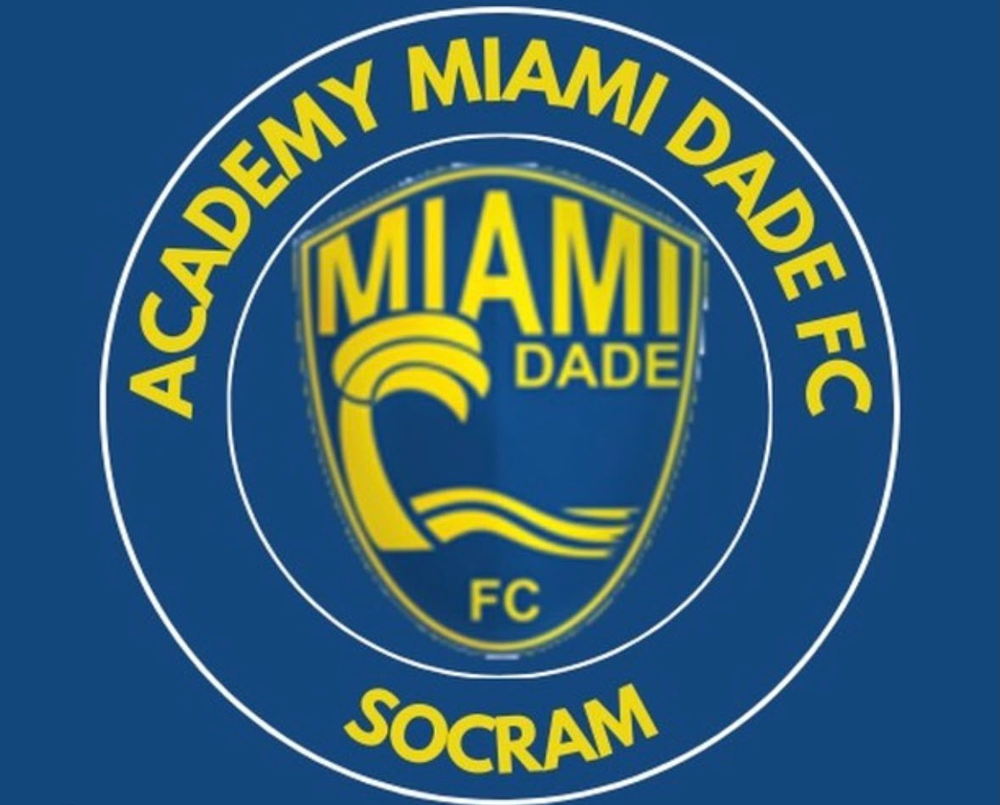
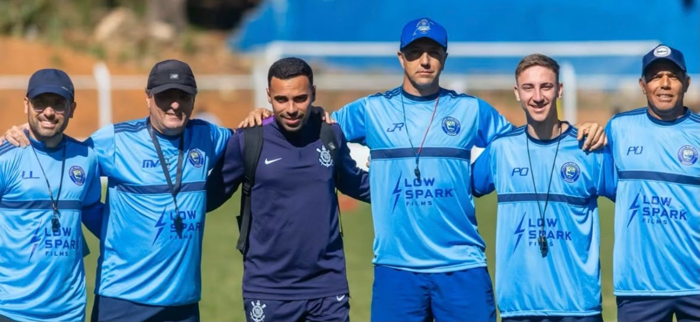
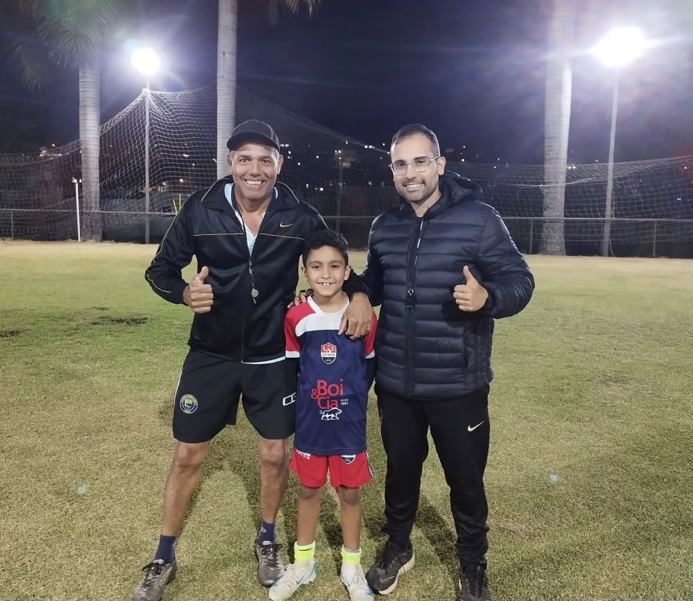
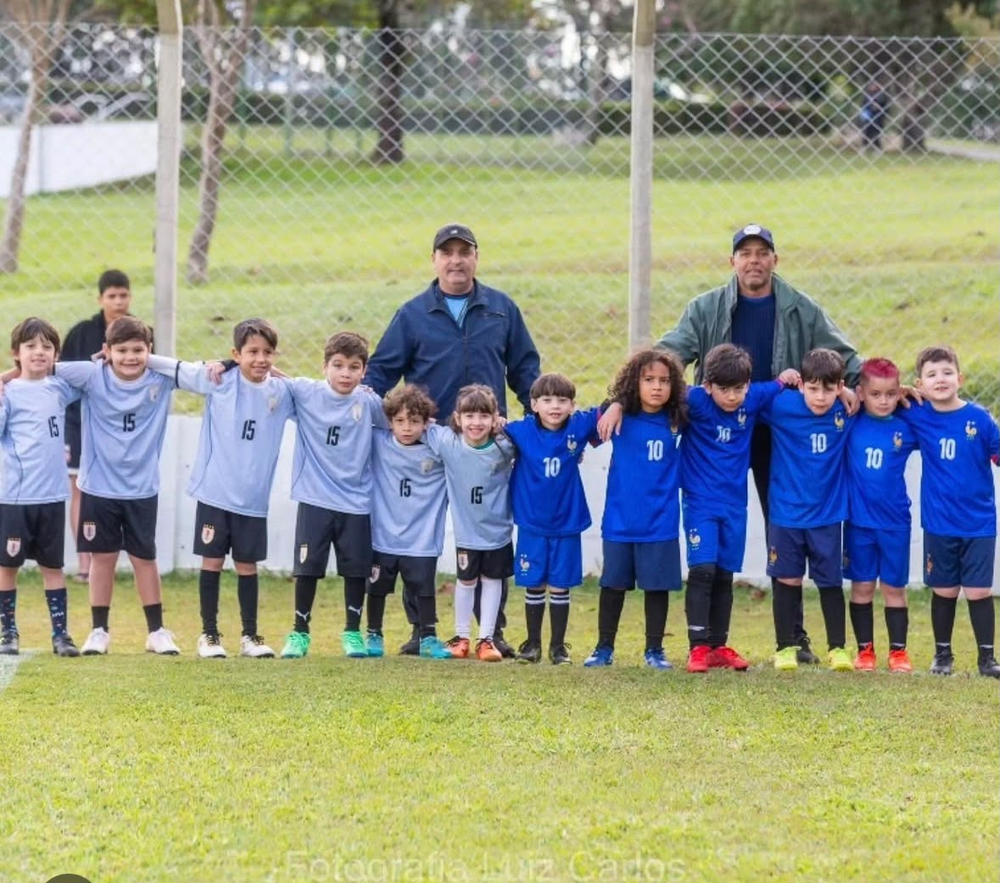
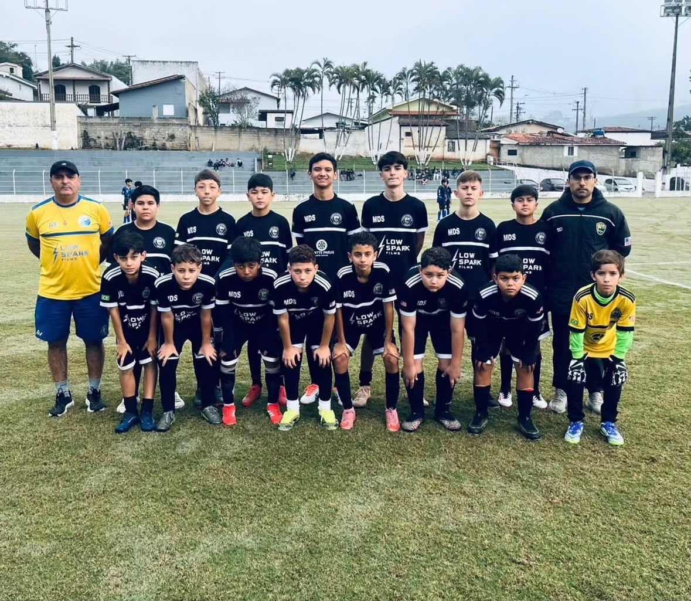
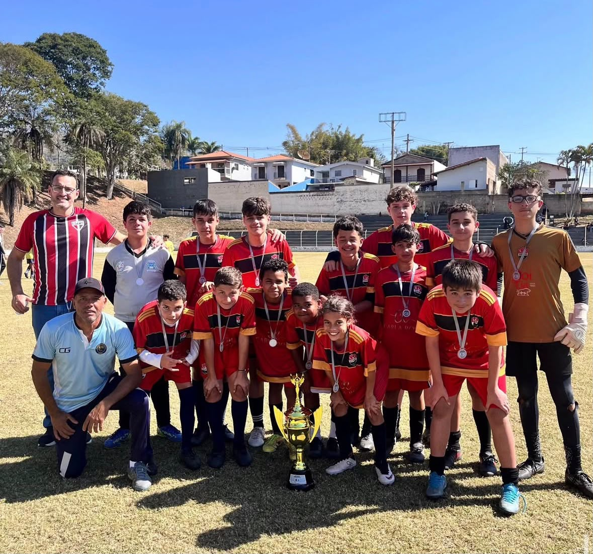
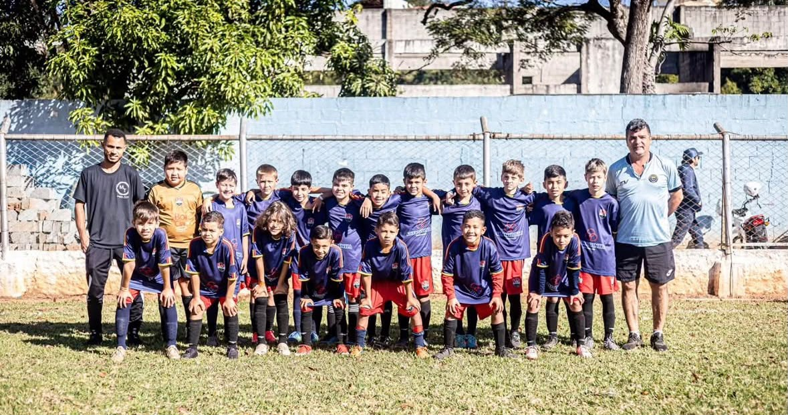
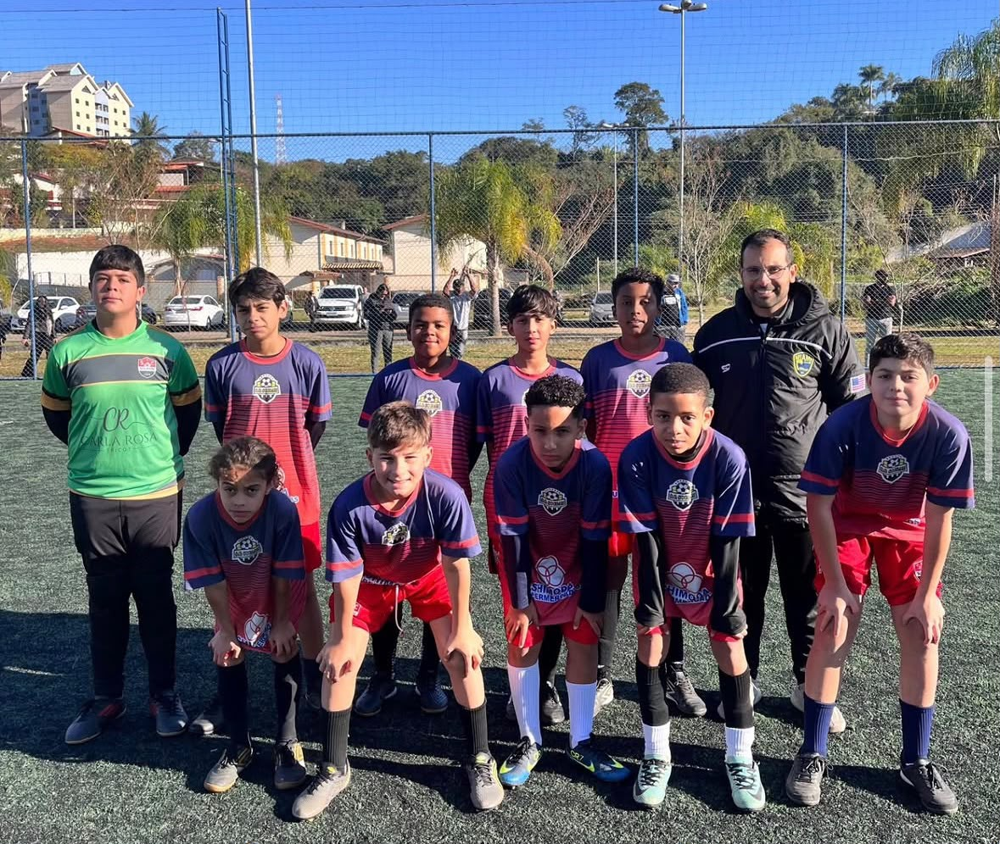
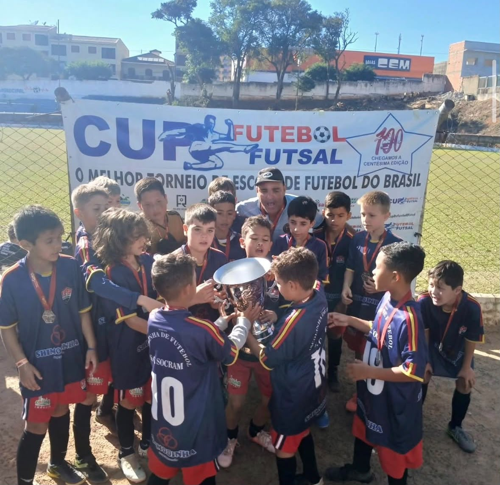

Miami Dade SocramDesenvolvimento infantil completo para crianças de 5 a 12 anos. Liderança, disciplina, trabalho em equipe e diversão com o Tio Marquinhos.
O futebol como ferramenta para o desenvolvimento social, emocional e físico do seu filho.
Inculcamos valores essenciais como respeito, empatia, companheirismo e disciplina para a vida diária.
Treinos técnicos e táticos adaptados para cada faixa etária de forma lúdica e eficiente.
Ambiente focado no bem-estar, na sociabilização e no apoio constante de treinadores capacitados.


À frente do projeto, o Tio Marquinhos une paixão pelo esporte e vocação para ensinar. Ele é o guia e inspiração para que cada criança descubra seu potencial máximo.
Junto a ele, conta com uma equipe de treinadores altamente capacitados, preparados para acompanhar de perto cada etapa da evolução motora, emocional e social dos pequenos atletas.
Confira alguns momentos dos nossos treinos






Conheça nossa estrutura, metodologia e os treinadores de perto.
Falar com o Tio Marquinhos no WhatsAppPostamos diariamente a evolução das nossas turmas e novidades do projeto!